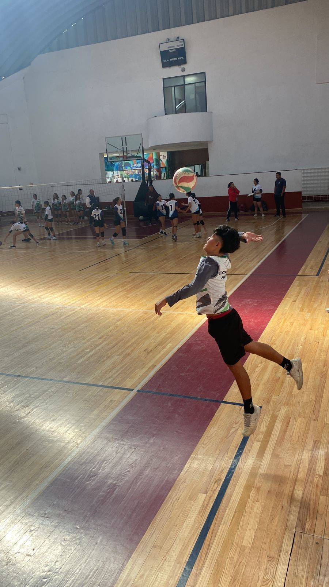

Mi niñito de ojitos bonitos...
Mediante esto quiero darte las gracias por absolutamente todo lo que haces por mi, no tengo la menor duda de que quiero pasar contigo el resto de mi vida, ya no me veo sin ti, y es que haces de todo por que yo este bien, tranquila, feliz, y me das el mundo en mis manitas, GRACIAS mi amorcito, yo no veo mi vida sin ti, no miento cuando digo que eres el amor de mi vida, tu ya eres parte de mis sueños y metas, sobre todo de mi futuro...
Mi hombrecito bello, no tengo palabras para agradecerte todo lo que me haces sentir y lo feliz que soy contigo, y no entiendo como puede existir una persona tan perfecta en este mundo tan feo, papi, estoy muy orgullosa de ti, de todo lo que logras, de lo mucho que te esfuerzas y sobre todo de las veces que lo intentas y jamas te rindes, eres una persona muy fuerte, pero no todo es un mundo de rosas, sabes perfectamente que a donde vayas voy contigo, jamás soltaré tu mano ni te dejaré solo, eres mi niño chiquito y yo toda la vida te voy a ver asi, si alguien te llega a hacer sentir mal claro que tambien me hiere a mi por que sabes perfectamente que toda mi vida trataré de hacerte sentir bien y que yo te daré todo de mi a manos abiertas justo por lo mismo, si fuera por mi quisiera que nadie te hiciera daño y poder cuidar de tu felicidad siempre, solo quiero cuidarte, eres mi bebe y jamas dejare de verte asi..
Pero sobre todo quiero que sepas que te amo,y que el futuro que vamos a construir va a ser lo que ambos siempre soñamos, y cuando lo logremos, algun dia nos sentaremos a platicar de cuando eramos unos peques soñando de tenerlo todo, te amo hombrecito de mi vida, aqui no solo tienes una novia, tienes un apoyo, y sobre todo una compañera de vida, no pienso soltarte aunque las cosas se pongan dificiles, TE AMO y por favor jamás lo olvides que sin ti no soy nada..❤️
